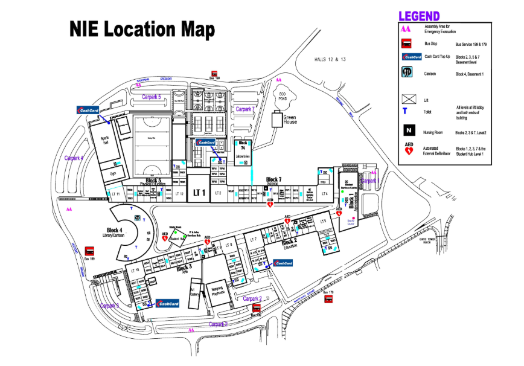

1. Observe the Area
Use the first-floor map as a reference.

2. Create Your Map
Use abstract shapes to represent important places.
Select a tool and begin creating your map.
Create an abstract map showing the relative size and position of key landmarks.
Use the first-floor map as a reference.

Use abstract shapes to represent important places.